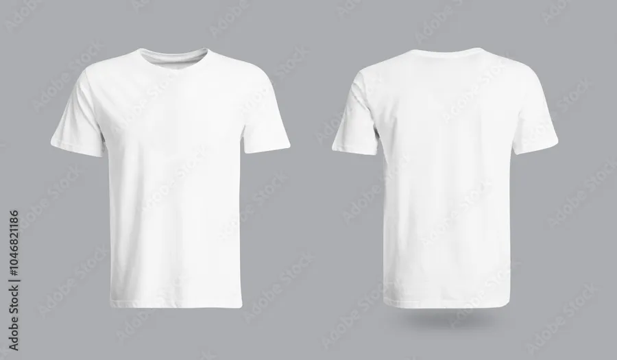

Gadżety
Koszulka „Adoptowałem psa AI”
59 zł
Bawełna organiczna, rozmiary S–XXL.
🚚 Wysyłka kurierem lub do paczkomatu w całej Polsce
Opis produktu
Wygodna koszulka z nadrukiem „Adoptowałem psa AI” i logo Psiej Łapy. Uszyta z bawełny organicznej – zysk ze sprzedaży wspiera schronisko.
Parametry produktu
| Materiał | 100% bawełna organiczna |
|---|---|
| Gramatura | 180 g/m² |
| Krój | unisex |
| Rozmiary | S–XXL |
| Pranie | w 30°C, na lewej stronie |